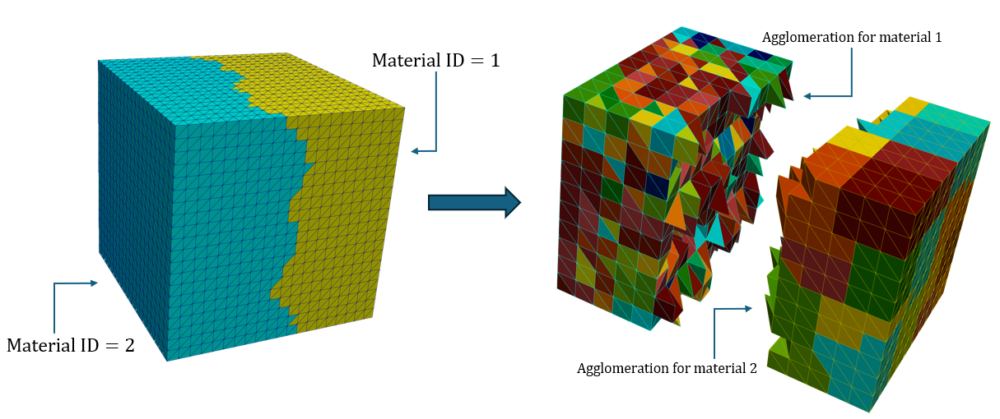

|
Vulpes
0.1.0
Versatile and parallel compUtational Library for high-order discontinuous Polytopal Element Simulations
|
|
Vulpes
0.1.0
Versatile and parallel compUtational Library for high-order discontinuous Polytopal Element Simulations
|
Author: Nicola De March nicol.nosp@m.a.de.nosp@m.march.nosp@m.@pol.nosp@m.imi.i.nosp@m.t
This tutorial documents the example examples/mesh/agglomeration/agglomerate_mesh.cpp, a command-line tool that reads a fine 2D or 3D mesh, groups its cells into agglomerates (polygons in 2D, polyhedra in 3D) and writes the agglomerated mesh. Every option is read from a JSON file; a template is provided in examples/mesh/agglomeration/agglomeration_parameters.json.
The agglomeration strategies implemented in Vulpes follow the approach of the MAGNET library; see References.
The executable is built together with the other examples (target agglomerate_mesh). It runs on one MPI rank only:
If no argument is given, it looks for agglomeration.json.
A minimal 3D settings file:
The program prints a summary of the settings, the size of the input mesh, the number of agglomerates and the time spent in each phase, then writes the agglomerated mesh to output_mesh (the parent directory is created if needed).
The JSON file must be plain JSON: comments (//) are not allowed. The commented block at the top of agglomerate_mesh.cpp is only documentation.
| Key | Type | Default | Used by | Description |
|---|---|---|---|---|
| dim | int | 3 | all | Mesh dimension: 2 or 3. |
| input_mesh | string | — (required) | all | Fine mesh. 2D: .vtu/.vtk with polygons. 3D: .vtu with tetrahedra or polyhedra. |
| output_mesh | string | — (required) | all | Path of the agglomerated mesh. |
| backend | string | "parmetis" | all | parmetis, kmeans or gnn. |
| method | string | "direct_kway" | all | direct_kway, bisect or mult_factor. |
| n_cells | int | 0 | direct_kway, bisect | Target number of agglomerates (see each method). |
| target_diameter | float | — | mult_factor | Maximum agglomerate diameter, in mesh units. |
| gnn_model | string | "base" | gnn | Pretrained model: base or hetero. |
| segregated_tag | string | "" | all | Name of a cell tag; each tagged region is agglomerated on its own. |
| regions | object | — | needs segregated_tag | Per-region override of n_cells and/or target_diameter. |
| repair | bool | true | 3D | Remove non-manifold agglomerates. Ignored (with a warning) in 2D. |
| repair_max_iterations | int | 100 | 3D, repair | Maximum number of repair iterations. |
| repair_stall_iterations | int | 3 | 3D, repair | After how many iterations a persistently non-manifold edge is resolved with new agglomerates. |
Keys that do not apply to the chosen backend/method are ignored, so the same file can keep all of them (as the template does) and you only switch backend and method.
The method decides how the fine cells are split; the backend decides which algorithm computes each split.
A single k-way partition of the whole mesh (or of each region) into n_cells groups.
Recursive bisection: at each level every group is split in two. The number of levels is ceil(log2(n_cells)), so the result has up to 2^ceil(log2(n_cells)) agglomerates: n_cells = 1000 gives 10 levels, i.e. up to 1024 agglomerates.
Recursive bisection driven by size: every group whose (vertex-vertex) diameter is larger than target_diameter is bisected again, until all groups are small enough. The number of agglomerates follows from the geometry; n_cells is ignored.
Groups that are not connected are split by the library, so the final number of agglomerates can differ slightly from n_cells. The repair (3D) can also add a few agglomerates.
Graph partitioning of the dual graph of the mesh (cells are nodes, shared facets are edges) with METIS/ParMETIS. It uses only the connectivity, not the geometry, so it is the fastest backend and the only one that accepts 3D input meshes with non-manifold fine cells. ParMETIS is not deterministic: two runs can give slightly different agglomerations.
| Method | Required keys |
|---|---|
| direct_kway | n_cells |
| bisect | n_cells |
| mult_factor | target_diameter |
Clusters the fine cells by the position of their barycenters (k-means, with cell measures). It produces compact, roughly isotropic agglomerates; the connectivity is enforced afterwards. With bisect/mult_factor each split is a 2-means.
| Method | Required keys |
|---|---|
| direct_kway | n_cells |
| bisect | n_cells |
| mult_factor | target_diameter |
Each bisection is computed by a pretrained Graph Neural Network (GraphSAGE, loaded with TorchScript from vulpes/geometry/gnn_models/), as proposed in MAGNET. The network bisects the dual graph using geometric features of the cells, aiming at well-shaped agglomerates with a quality comparable to METIS.
| Key | Values |
|---|---|
| gnn_model | base: homogeneous features (SAGEbase2D.pt / SAGEbase3D.pt); hetero: features that also account for material/region heterogeneity (SAGEhetero2D.pt / SAGEhetero3D.pt). |
| Method | Required keys |
|---|---|
| direct_kway | not supported |
| bisect | n_cells, gnn_model |
| mult_factor | target_diameter, gnn_model |
Many problems have several materials or subdomains, and agglomerates must not cross the interface between them. Vulpes supports this through a cell tag:
Which key to override depends on the method:
| Method | Key to set in regions |
|---|---|
| direct_kway | n_cells (agglomerates in that region) |
| bisect | n_cells (converted to ceil(log2(n_cells)) levels in that region) |
| mult_factor | target_diameter (maximum diameter in that region) |
The figure shows a cube meshed with tetrahedra and split into two materials (Material ID = 1 and Material ID = 2). The two halves are agglomerated independently and with different resolutions: the agglomerates of material 1 are small (fine agglomeration), those of material 2 are larger (coarse agglomeration), and no agglomerate crosses the material interface.

Figure: tetrahedral cube with two materials (left) and its agglomeration with a different target size in each material (right).
A settings file that produces this kind of result, assuming the material is stored in a cell-data array named MaterialID (use the actual array name of your mesh, as shown in ParaView):
With a fixed number of agglomerates per material, use direct_kway and override n_cells instead:
During the run, one line per region reports how many fine cells it has and how many groups were created:
In 3D an agglomerate can be made of two parts that touch only along an edge. That edge is then shared by more than two faces of the agglomerate (non-manifold edge): geometry::Cell3D does not support such polyhedra and the DG solvers abort on them. With "repair": true (default) the labels are fixed iteratively, until no such edge is left or repair_max_iterations is reached:
Cells never move to an agglomerate of another region of segregated_tag, so the material interfaces are preserved.
After the agglomerated mesh is built it is validated: if any cell has a non-manifold edge or a face of zero area, the program exits with an error and the output mesh is not written. In that case:
In 2D the input check, repair and validation are skipped and the mesh is written as it is.
The other files in examples/mesh/agglomeration/ show how to call the agglomeration classes directly from C++:
Antonietti, P.F., Caldana, M., Mazzieri, I. et al. MAGNET: an open-source library for mesh agglomeration by graph neural networks. Engineering with Computers 41, 4825–4850 (2025). https://doi.org/10.1007/s00366-025-02223-y